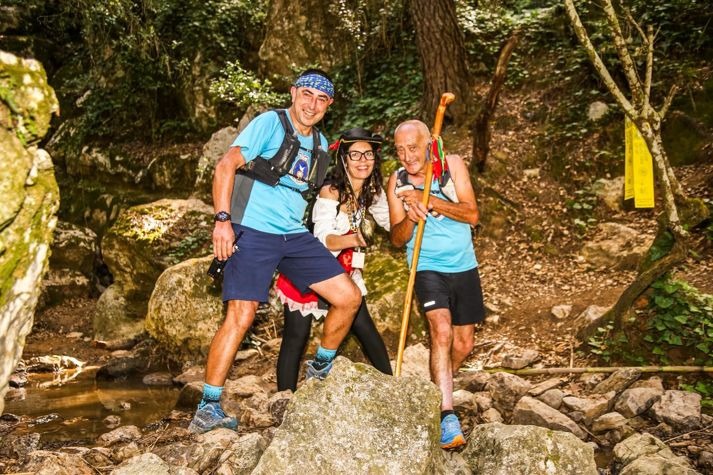

The Trail Rota dos Piratas took place on Sunday 17 May 2026 in Ribamar, a coastal parish in the municipality of Lourinhã, Portugal, with event coverage by the Image Media team. The event was organised by the Centro Social e Cultural de Ribamar (CSCR), a local social solidarity institution, in partnership with registration platform Trilho Perdido, and received support from the Portuguese Athletics Federation (FPA) for course homologation.
Four distances were on offer: a 30km Trail Longo with 1,500m of elevation gain starting at 8:30am, a 17km Trail Curto with 900m of climbing starting at 9:15am, a Mini Trail of around 13km with 600m of climbing starting at 9:30am, and a non-competitive 10km Caminhada with 400m of elevation gain starting at 9:45am. Routes wound through the coastal terrain of Porto Dinheiro, Valmitão and Vale d'Arrocha, with the competitive distances open to participants aged 16 and over.

Registration for the four distances, run through the Trilho Perdido platform, reached just over 1,000 entries. Proceeds from the event went toward the Centro Social e Cultural de Ribamar's fundraising campaign to acquire an ambulance for the local community.

The Image Media coverage team comprised Fran Paulino, Lucas Araújo, Sérgio Mendes, Eduardo Pereira, Luis Moreira and Luciano Inocêncio.